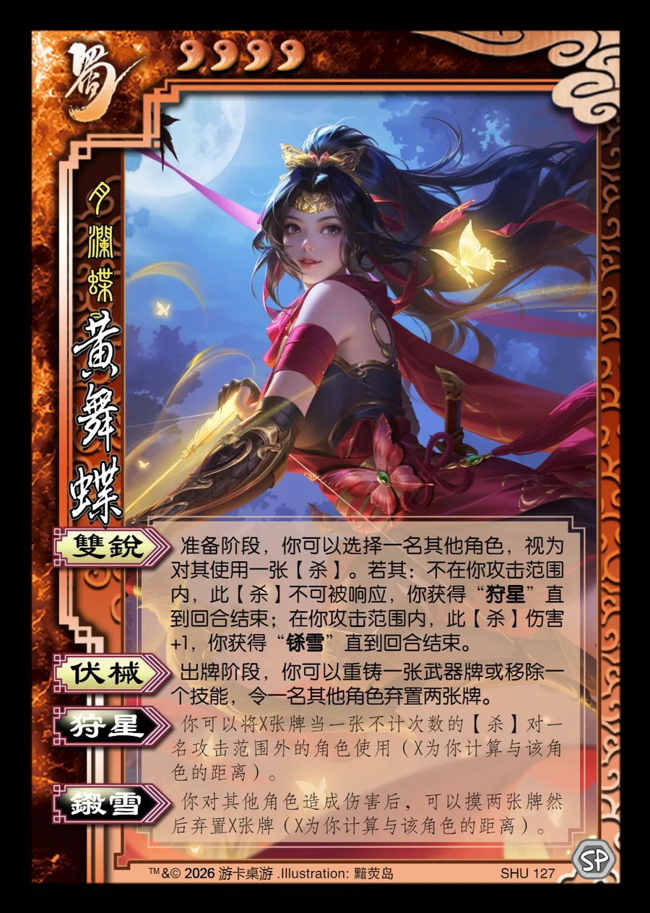

点击卡面查看大图
蜀
黄舞蝶
♥4月澜蝶影
双锐
准备阶段，你可以选择一名其他角色，视为对其使用一张【杀】。若其：不在你攻击范围内，此【杀】不可被响应，你获得“狩星”直到回合结束；在你攻击范围内，此【杀】伤害+1，你获得“铩雪”直到回合结束。
伏械
出牌阶段，你可以重铸一张武器牌或移除一个技能，令一名其他角色弃置两张牌。
狩星衍生
你可以将X张牌当一张不计次数的【杀】对一名攻击范围外的角色使用（X为你计算与该角色的距离）。
铩雪衍生
你对其他角色造成伤害后，可以摸两张牌然后弃置X张牌（X为你计算与该角色的距离）。